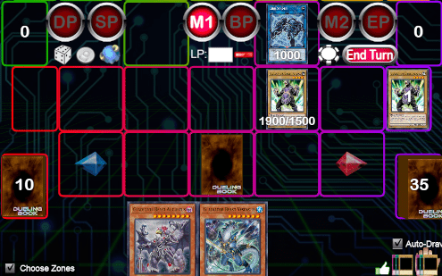
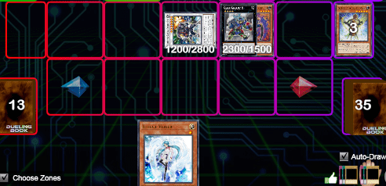
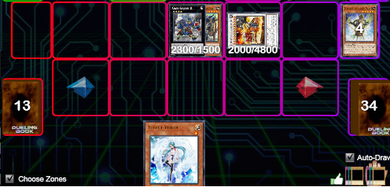

Esempi
Nella seguente sezione andremo ad anlizzare alcune meccaniche di gioco usando esempi pratici. Questi esempi metteranno in luce alcuni punti critici della strategia di Yu-Gi-Oh, dando uno spunto di riflessione al giocatore che si immegerà nella lettura.
// QUESTO COMMENTO é DA RIMUOVERE - GABRIELE INSERISCI QUI LA ROBA CHE TI SERVE PER FUSIONE E SYNCHROLink Climbing
In questa sezione andremo a vedere come sfruttare link di livello basso per arrivare a link di livello più alto. Questo concetto è globalmente conosciuto come link climbing. In questo esempio vedremo una mano particolarmente sfortunata che contiene solamente carte difensive, mostri normali e alcuni mostri di livello molto alto. Una mano del genere potrebbe fortemente compromettere l’esito del duello. Infatti, se non fossero presenti i mostri link nel nostro extra deck, l’unica cosa che potremmo fare sarebbe evocare normalmente il nostro mostro, posizionare le carte trappola nelle loro zone e passare il turno all’avversario.

Prendiamo la board appena vista e sfruttiamo i mostri link presenti nel nostro extra deck.
- Mandiamo Gladiatore Bestia Andal al cimitero per evocare specialmente dal nostro extra deck Link Spider.
- Poi possiamo sfruttare l’effetto di Link Spider per evocare specialmente dalla nostra mano la seconda copia di Gladiatore Bestia Andal nella zona puntata dal nostro mostro. 
- Ora, avendo due mostri sul terreno, possiamo sfruttare il nostro mostro link-2 Pantera da Laboratorio. Lo evochiamo specialmente dall’extra deck mandando Link Spider e Gladiatore Bestia Andal al cimitero.
- Applichiamo l’effetto di Pantera da Laboratorio ed il nostro mazzo inizia ad entrare in combo producendo questo terreno:

N.B le azioni che vanno a completare il terreno visto sopra sono tralasciate in quanto sono tipiche solamente di questa tipologia di deck. Infatti, solamente un deck Gladiatore Bestia riesce ad evocare fusioni senza l’utilizzo di polimerizzazione.
XYZ Detatching
Andiamo ora a guardare più nel dettaglio il vantaggio portato dai mostri xyz e come sfruttarlo al massimo. I mostri xyz sono facilmente evocabili e hanno effetti che, se sfruttati bene, portano degli ottimi risultati. In questo esempio vediamo il mostro Gear Gigant X: non è un mostro con punti attacco o difesa molto alti, ma il suo effetto permette di estendere le combo del proprio mazzo andando alla ricerca di mostri che ci potrebbero servire.
Il nostro esempio partirà dal seguente terreno:

Sul nostro terreno sono presenti 2 mostri di livello 4 ed è quindi possibile evocare Gear Gigant X sovrapponendo due mostri. Quando andremo ad attivare l’effetto del nostro mostro xyz ci verrà chiesto di staccare un materiale. La scelta risulta fondamentale per chiudere la combo in maniera corretta!
Esempio di scelta SBAGLIATA
- Sovrapponiamo "carro" con "AnimaPerfora" ed evochiamo Gear Gigant X.
- Attiviamo l’effetto di Gear Gigant X e scartiamo al cimitero "carro". In questo modo aggiungiamo un mostro di tipo macchina di livello 4 o inferiore dal deck alla mano. Scegliamo "trombettiere" in quanto è un mostro tuner che ci permetterà di tentare una synchro evocazione.
- Attiviamo l’effetto di waraji che ci permette di evocarlo specialmente dalla mano ed evochiamo specialmente. "trombettiere" ha un effetto simile che ci permette di evocarlo specialmente.
- Effettuiamo una synchro evocazione di livello 7 (5 + 2) ed evochiamo "stealth ninja". Con questo passaggio la nostra combo è finita. 
Esempio di scelta CORRETTA
- Sovrapponiamo "carro" con "AnimaPerfora" ed evochiamo Gear Gigant X.
- Attiviamo l’effetto di Gear Gigant X e scartiamo al cimitero "AnimaPerfora". In questo modo aggiungiamo un mostro di tipo macchina di livello 4 o inferiore dal deck alla mano. Scegliamo "trombettiere" in quanto è un mostro tuner che ci permetterà di tentare una synchro evocazione.
- Si attiva anche l’effetto di "AnimaPerfora" che ci permette di aggiungere un samurai superpesante a nostra scelta dal deck alla mano. Scegliamo un'altra copia di waraji.
- Attiviamo l’effetto dei due waraji e del "trombettiere" evocando tutti tre specialmente.
- Effettuiamo una synchro evocazione di livello 12 (5 + 5 + 2) ed evochiamo “re treno”. Con questo passaggio la nostra combo è finita. 
La differenza tra i due terreni è ovvia. Occorre sempre prestare attenzione a quali mostri sovrapporre e quali staccare per sfruttare al massimo le potenzialità del nostro mazzo.